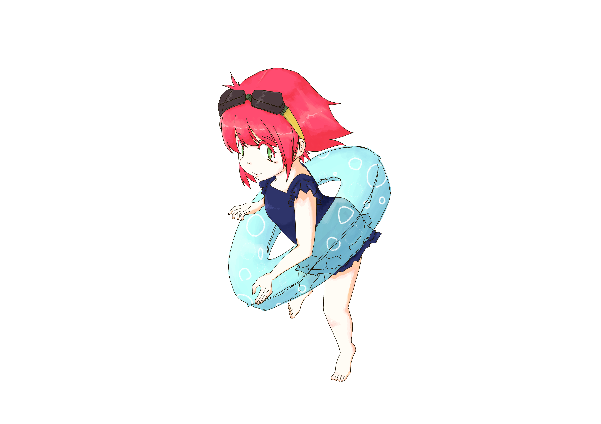

本イベントは終了しました。
皆さまご参加頂き誠にありがとうございましたmm
最終結果
1. 優勝陣営
Pool Praty陣営
陣営メンバー
・井上はナーフ済み
・4xis
・やわらかにかま
・東條希
・タナパイ
・ひろっぺん
・破壊神幸子
・kon234
・yocino
・Zyairo
・ゆ 3
・yuuuuutan
・さふぃたん
・NaKooooo
・Srnith
・Threshにバナナを
・赤坂サkarthus
・gabacho
・fp0830
・ulg
2. 優勝陣営賞品
優勝陣営の皆様には以下をプレゼントさせて頂きました
・500RP
・975RP保証ミステリースキン
・LNSクリエイターによるPool Partyスキンイラスト書き下ろしのチャンピオン指名権

(LNSクリエイター・ULG氏による、指名頂いたプールパーティ オレリオン・ソル)
3. MVP
ひろっぺん 様
4. MVP賞品
指定チャンピオンの全スキンプレゼント (今回はミス・フォーチュンの全スキンをプレゼントさせて頂きました)
最後に...
参加して頂いた皆様、視聴・応援して頂いた皆様、
当日は長い時間お付き合いいただき、誠にありがとうございました。
少しでも楽しかった、また参加したい・今度は参加したいと思って頂けましたら幸いです。
今後もより皆様に楽しんで頂ける企画を考えていきますので、引き続きLNSをよろしくお願いいたします。
GLHF！
LNSオンラインイベント第1弾！
Snow downスキンとPool Pratyスキンどちらが好き？





コンセプト
・好きなスキンの陣営に所属し、相手陣営に勝利しよう！
イベントの流れについて

・2つの陣営のうちどちらかに所属後、相手陣営との試合に勝利し、自陣営を優勝に導け！
1. チーム分け
・2つの陣営にそれぞれ20名ずつ分かれます。
・各陣営メンバーは運営により4チームに振り分けられます。
・振り分けられたチームでラウンド1、ラウンド2に挑んでいただきます。
2. ラウンド１
・チーム結成後、運営によってランダムにマッチングさせていただきます。
・Snowdown陣営がBlueチームとなります。
・Snowdown陣営が部屋の作成をお願いします。

3. ラウンド２
・ラウンド2はラウンド1の結果を踏まえ、改めてマッチングさせていただきます。
・ラウンド1同様に4チーム同時に試合を行います。
・Poolparty陣営がBlueチームとなります。
・Poolparty陣営が部屋の作成をお願いします。
4. ファイナルラウンド
・各陣営の20名から5名ずつを選抜したスペシャルチームで最後の戦いです。
・自薦他薦は問いません。

5. 結果発表
・合計勝利数(得点)が多かった陣営の優勝となります。
・ラウンド1、2は試合への勝利につき1pt、ファイナルラウンドは勝利陣営に3pt付与されます。

賞品について
優勝陣営全員プレゼント
・RiotJP様より、優勝陣営20名全員に500RPがプレゼントされます。
・LNSイラストレーターからのプレゼント。優勝陣営の妄想スキンイラストの描き下ろしが行われます。(結果発表後、陣営で1チャンプ選んで頂きます)
優勝陣営もしくは敗北陣営プレゼント
・LNSギャンブラーからのプレゼント。優勝陣営の最終メンバー5名に当たり確率1/2のくじ引きをしてもらい、当たりの数に応じて以下がプレゼントされます。
- 全員外れ : "敗北陣営"20名全員にミステリースキン1つずつ
- 1,2人当たり : 勝利陣営20名全員にミステリースキン1つずつ
- 3,4人当たり : 勝利陣営20名にミステリースキン豪華版1つずつ
- 5人当たり : 20名にミステリースキン通常+豪華版両方1つずつ
優勝陣営の1名にMVP賞品プレゼント
・LNSギャンブラーからのプレゼント。優勝陣営のMVP1名にデッドオアアライブ権として、くじ引きの結果によって以下をプレゼント。
- 当たり : 指定チャンピオンの全スキン（ギフトストアから購入可能なもののみ）
- 外れ : ミステリースキン1つ
注意
・賞品付与が行われるまで、サモナーネームの変更は行わないようお願い致します。
大会ルール詳細
大会形式
・大会形式は「フェス形式」で実施となります。 ※目玉焼きには・・「醤油派」vs「ソース派」、といった形で2陣営に分かれます。
・ラウンド1、ラウンド2それぞれにて、４チームvs４チームが同時に対戦します。
・その後ファイナルラウンドとなり、各陣営から選抜された５名でスペシャルチームを組み対戦します。
・合計勝利数の多い陣営が優勝です！
試合形式
・サーバ：JP
・観戦：全て許可
・ゲームタイプ：カスタム(トーナメントドラフト)
・部屋名：[LNS] Snow vs Pool / ○ vs ○ ※○はチーム名
・パスワード：lns
・ルームはブルーサイドチームが作成をお願いします。
・試合開始 10分前にルームを作成し、5分前には入室を完了してください。
組み合わせ
・参加者は各陣営内で、運営によりバランスを考慮しチーム分けされます。
・ラウンド1はSnowdown陣営がBlueチームとなります。
・ラウンド2はPoolparty陣営がBlueチームとなります。
・Blueチームが各部屋の作成をお願いします。
・ファイナルラウンドのBlueチーム/Redチームについては、先に選抜メンバー5名の報告があった陣営のチームがブルーサイドとなります。
試合結果報告
・報告は勝ちチームの代表1名が行ってください。
・勝利チームが大会Discordサーバーの #試合結果報告 チャンネルへ、以下テンプレートにて報告をお願い致します。
○ vs ○
[○○陣営]○チームの勝利です。
※○はチーム名
注意事項・禁止事項
ゲーム中のポーズ
ポーズを掛ける際は、掛けた後に相手チームに理由の連絡をお願いします。
ポーズ解除は、間違いが無いよう
・相手チームの準備が出来ているか確認を行ったうえで
・掛けた人が
行ってください。
一度のポーズ時間は5分を上限とし、超える場合はポーズを掛けたチームの敗北とします。
ディスコネクト
Ban/Pick時にディスコネクトがあった場合は、その時点でQuitし、同じBan/Pickを行ってください。
Quitせずに相手のPickが終わった場合は変更不可とします。
遅刻・欠員
何らかの理由で試合時間に参加可能なメンバーが５名が揃わない場合は、運営にて欠員補充の手続きを行います。
イベント開始後、途中で欠員が発生する場合も同様に運営にて欠員補充の手続きを行います。
また、途中から不参加となる場合は運営への報告を必ずお願いします。
マナー
以下を例とするスポーツマンシップに反する行為については、運営にて悪質と判断できる場合には不戦敗や今後のLNSリーグ・イベント参加拒否などの対応をとります。
・中傷的・侮辱的なチャット
・正当な理由のない意図的なディスコネクト
・laughdance 連打による挑発やゲーム終了直前にアイテム全売却等の煽り行為
・ゲーム開始時から動かない、無意味な自殺等
配信
一部の試合は、LNSリーグ公式配信の可能性がありますので予めご了承ください。
配信が行われる試合は、観戦枠へ運営への追加をお願いします。どの試合が配信されるかは試合前に発表されます。
個人での配信を行う場合、自チームおよび相手チームメンバーに確認の上、行ってください。尚、運営への連絡は不要です。
運営の権限
大会は上記ルール準拠で行われますが、本ルールで対応しきれないような不慮の事態や、ルール適用に曖昧な状況が発生した場合の判断は運営が権限を持ちます。
本大会参加者は、運営から指示があった場合その判断に従ってください。
League of Legends トーナメントルールについて
本大会はLeague of Legends トーナメントルールに準拠し開催いたします。
League of Legends トーナメントルール
当日について
参加者の当日の集合について
当日は13:00までにイベント用Discord channelにJoinしてください。Joinする
集合時間になりましたら点呼をとりますので、運営の指示に従うようお願いします。
タイムスケジュール
以下の予定で進行します
・13:00 集合・オープニング
・14:00 ラウンド１開始
・15:00 ラウンド２開始
・16:00 ファイナルラウンド準備
・16:30 ファイナルラウンド開始
・17:30 結果発表・表彰
・18:00 終了
＊本スケジュールは事前の予告なく変更される可能性がございます。
Q & A
チャンピオンはSnowdown / Poolpartyのスキンを所持するものに限定されていますか？
A. そのような限定はありません。お好きなチャンピオンをご使用ください。
グローバルBANはありますか？
A. グローバルBANは設けていません。
サモナーネームを変更していい？
A. 賞品の付与まで変更はしないようにお願いします。
スマーフいたらどうするの？
A. 運営はみなさんを信じています。
VCできないんですが大丈夫？
A. ミュートでの参加でも問題ありませんので、コミュニケーションをスムーズに進めるため、音声チャンネルへの参加はお願いします。